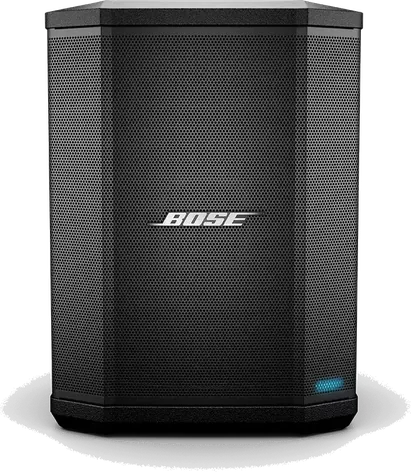
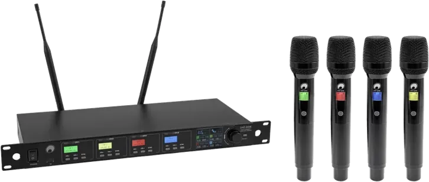

Technik mieten
Musikanlage, Mikros
& Licht für Ihre Feier
Abholung in Fellheim
dj-kolja-one.de/technik-mieten
Link in der Bio

„Der Klang war hervorragend.“

„… falls irgendwas nicht klappen sollte.“
Übergabe und Rückgabe hat super geklappt.
Alles bestens.